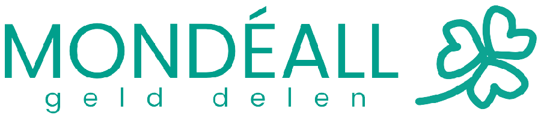
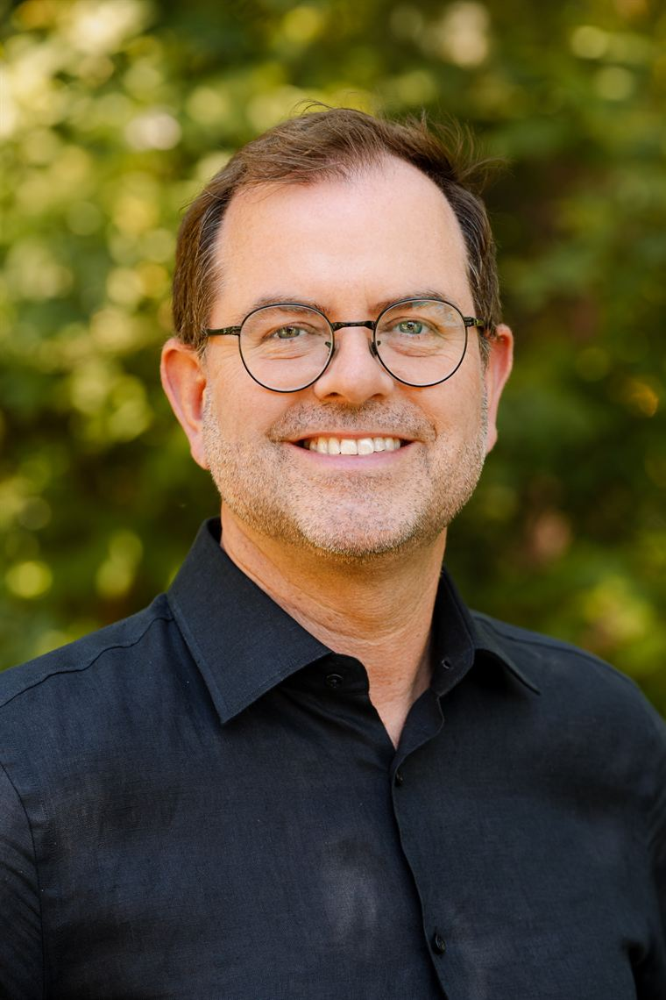
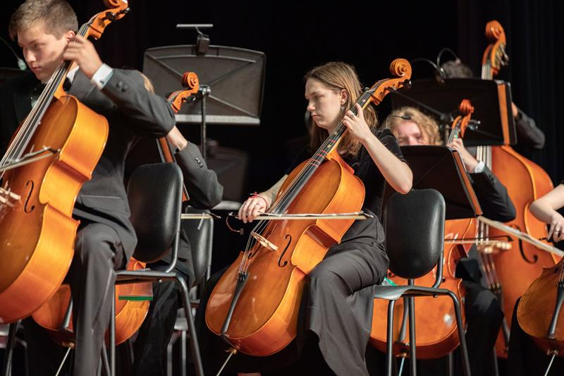
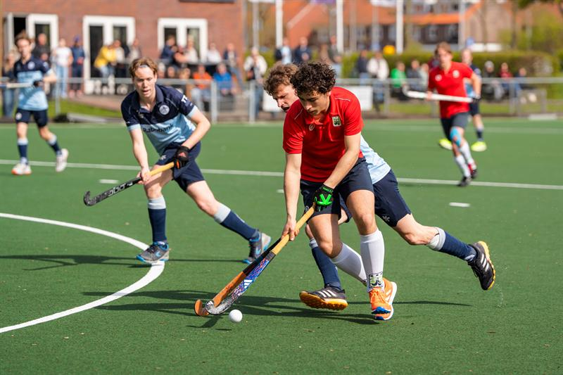
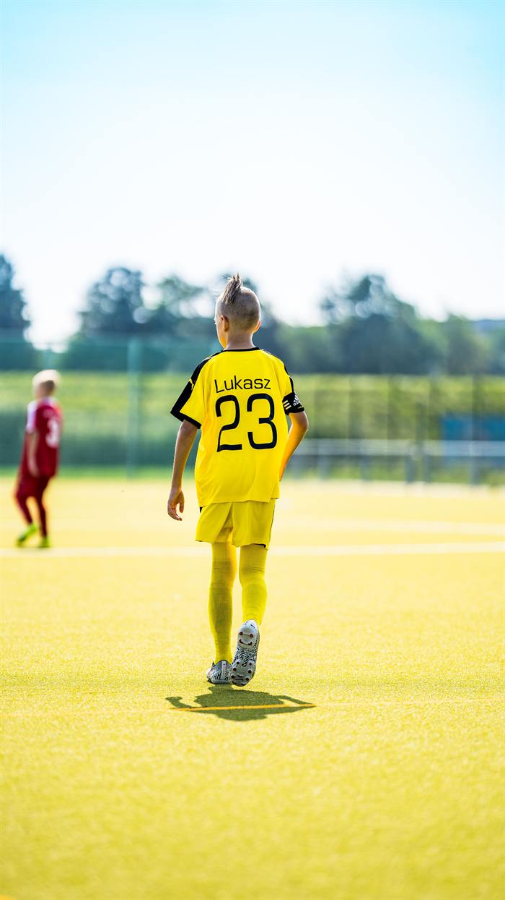

Platform voor volwaardig geld delen
Een persoonlijke vraag aan iedereen die betekenisvol wil bijdragen
Voor familie, vrienden en bekenden. Een korte uitleg over wat Mondéall wordt, hoe ver het nu is en waar ik je hulp bij vraag. Dit staat los van het latere platform.
Mathieu Rensen
Maak ’t mogelijk

Mensen helpen en werken naar de bedoeling is de rode draad in mijn leven. Dan zie ik dat geld niet altijd op de plekken terechtkomt waar het wel nodig is. “Dit moet toch anders kunnen?”, is het idee dat al jaren in mijn hoofd zat. Iedereen wil ‘een betere wereld’ en we hebben allemaal idealen. Ik zie genoeg initiatieven, goede doelen en verenigingen die de wereld mooier en kleurrijker maken. De puzzel was alleen: hoe is dat te realiseren?
De zoektocht naar de ideale wereld was een proces van vallen en opstaan. Het idee is blijven liggen en weer opgepakt. Maar het beeld werd wel steeds scherper. Het hart van mijn idee is lokaal. Dat is herkenbaar. Daarnaast moet het concreet en zichtbaar zijn: wat is nodig en hoe is dat eenvoudig te realiseren? Het geld moet terechtkomen bij lokale verenigingen en maatschappelijke initiatieven. Zij verbinden mensen, hebben altijd geld nodig en vormen het hart van een dorp of wijk. Daarbij maken lokale ondernemers en familiebedrijven het mogelijk dat elke euro gewoon naar het Initiatief gaat en dat iedereen anoniem kan geven: een platform waar de overheid ondersteunt en aansluit bij wat lokaal betekenisvol is.
Wat mij drijft is uiteindelijk iets eenvoudigs. Een bijdrage wordt niet betekenisvol door het bedrag, maar door de aandacht die eraan voorafgaat: kijken naar wat er is, zien wat nodig is, het herkennen, het voelen en er dan naar handelen. Daar is geen groot vermogen voor nodig. Eén euro is genoeg, als hij met aandacht gegeven en ontvangen wordt. Mondéall maakt ’t mogelijk.
Rijk genoeg, en toch
Nederland is een rijk land. Huishoudens gaven in 2024 samen ruim €2,35 miljard aan goede doelen: gemiddeld €415 per gevend huishouden, en 76% van de huishoudens gaf geld of goederen. Nalatenschappen leverden dat jaar €512 miljoen op, een stijging van 13% ten opzichte van 2022 (Bekkers, Koolen-Maas & Schuyt, Geven in Nederland 2026, Centrum voor Filantropische Studies, Vrije Universiteit Amsterdam). Er is, in het groot, geen tekort.
En toch:
- kan niet ieder kind mee op schoolkamp;
- moet een sportvereniging de verouderde douches of kleedkamers nog een jaar aanhouden;
- staat er in de ene wijk een nieuwe speeltuin en in de andere al tien jaar niets;
- zijn er mensen die er domweg niet bij horen, omdat meedoen geld kost dat ze niet hebben.
Het probleem is dus niet schaarste. Het is dat geld en behoefte elkaar niet vinden. Geld zit vast in structuren; goede initiatieven vinden geen financiering. Dat is wat Mondéall wil oplossen.
Maatschappelijk initiatief
Waarom lost niemand dit al op? Omdat de systemen die we hebben, hier niet voor gebouwd zijn.
De socioloog Theo Schuyt (VU Amsterdam) beschrijft dat een samenleving vier systemen kent om voor elkaar te zorgen:
- De markt: gestuurd door vraag en aanbod. Je verdient een inkomen door te werken en te ruilen, maar de markt ruilt. Belangeloos geven past er niet in.
- De overheid: belasting, subsidie, zorg. Rechtvaardig en onmisbaar, maar noodzakelijk onpersoonlijk: gebonden aan regels, aan politiek, aan wat verantwoord kan worden. Een subsidieregeling reikt tot een grens en raakt vaak verder af van de beleefde wereld en de concrete behoeften van mensen. Daarachter staat geen loket meer.
- Familie en naasten: de dierbaren die je helpen en ondersteunen als dat nodig is. Wie geluk heeft, heeft mensen om zich heen, maar niet iedereen heeft dat.
- Maatschappelijke initiatieven: wat mensen vrijwillig voor elkaar overhebben. Denk aan vrijwilligers, verenigingen en stichtingen, huishoudens die geven en bedrijven die sponsoren. Schuyt gebruikt zelf liever deze term dan “filantropie”, een woord dat al snel klinkt als iets voor de vermogenden, terwijl het in de praktijk draait op gewone huishoudens.
Dat vierde systeem is geen restje dat overblijft. Het heeft een eigen functie: ruimte voor maatwerk, voor snelheid, voor lokale verschillen, voor precies dat wat net buiten de regeling valt.
Alleen: ook dit systeem is onpersoonlijk geworden. Tussen de mens die wil geven en het initiatief dat steun nodig heeft, staan nu vaak partijen die een deel afromen, doelen die om aandacht concurreren, en gegevens die worden verzameld. Geven is een transactie geworden.
Mondéall is geen nieuw systeem. Het is een instrument binnen dit vierde systeem. Het bestaat om maatschappelijke initiatieven weer dichter bij mensen zelf te brengen: rechtstreeks, zonder tussenlaag, zonder dat er iets wordt afgeroomd.
Mondéall kiest geen kant. Het enige criterium is of iets de buurt echt vooruithelpt.
Schuyt zelf vat het zo samen: “Heel kort geformuleerd kent elke samenleving ideaaltypisch vier systemen voor mensen om te leven en te kunnen overleven: 1. een familiesysteem; 2. een overheidssysteem; 3. een marktsysteem en 4. een filantropisch systeem.” (Theo Schuyt, afscheidsrede Aandacht voor vermaatschappelijking, Vrije Universiteit Amsterdam, 26 juni 2026.)
We moeten het zelf doen, net als vroeger
Er was een tijd dat geven vanzelf ging. Je zag je buurman, je herkende wat hij nodig had, en je hielp. Geen formulier, geen platform, geen percentage: een hand, een gulden in het mandje, een middag meewerken.
In het oosten van het land heet dat noaberschap: buren die elkaar bijstaan, niet uit liefdadigheid maar omdat het vanzelfsprekend is. Geen loketten, geen aanvraagprocedure. Nabijheid, wederkerigheid, en de stille afspraak dat je elkaar niet laat vallen.
Die reflex is niet verdwenen. Hij is bedolven geraakt. Mondéall wil hem weer ruimte geven, met de middelen van nu maar met de vanzelfsprekendheid van toen.
Dit is geen nostalgie en geen verwijt aan de overheid. Het is de constatering dat sommige dingen alleen werken als we ze zelf doen.
Wat Mondéall wordt, met voorbeelden
Een lokaal platform waarop een vereniging, stichting, school of kerk een Initiatief plaatst voor iets concreets. Buurtgenoten delen mee vanaf €1.
Denk aan:
- een set instrumenten voor de jeugdafdeling van de muziekvereniging;
- een aanhanger voor de vrijwilligers die het sportpark onderhouden;
- fruit op school, elke week, het hele jaar;
- een clubhuis dat een verflaag en nieuwe kozijnen nodig heeft;
- een schoolkamp waar elk kind mee kan.



Het bijzondere: honderd procent komt aan
Ken je dat? Je wilt €15 geven aan een goed doel en tijdens het betalen verschijnt de vraag of je ook wilt bijdragen aan de kosten. Vink je “ja” aan, dan geef je opeens €21 of €26, zonder dat helder is hoeveel daarvan bij het doel zelf terechtkomt. Bij Mondéall bestaat die vraag niet. Wat je geeft, komt aan. Geen commissie, geen percentage dat blijft hangen.
Een euro blijft een euro
Reken het eens na. Je wilt één euro delen met de muziekvereniging in je dorp. Bij de meeste platforms gaat er per bijdrage een vast bedrag af voor de verwerking, plus een percentage. Dat vaste bedrag is niet groot, maar bij een bijdrage van één euro is het bijna alles. Wat er dan aankomt, is een paar cent of helemaal niets.
Daarom bestaat “delen vanaf één euro” bij die platforms eigenlijk niet. Het staat er wel, maar het werkt niet. Het model is gebouwd op grotere bedragen, en kleine bijdragen worden er stilletjes door opgegeten.
Dat geldt niet alleen voor crowdfundingplatforms. Ook bij veel landelijke goede doelen gaat een deel van elke gift naar kosten voordat de rest bij de missie terechtkomt. Een overzicht, gebaseerd op eigen onderzoek van publiek beschikbare tarieven en cijfers, zonder namen van platforms of goede doelen:
| Waar | Wat blijft er over van jouw euro |
|---|---|
| Platforms | Vaste kosten van circa €0,25 tot €1 per bijdrage, plus 2% tot 7% van het bedrag. Bij een bijdrage van 1 euro blijft vaak weinig of niets over. |
| Goede doelen | Gemiddeld gaat circa 89 cent naar de missie, de rest naar kosten voor onder meer werving en beheer (CBF). |
| Mondéall | De volledige euro gaat naar het Initiatief. |
Kortom: Mondéall €1 blijft €1, ook waar andere platforms of landelijke goede doelen van een kleine bijdrage per saldo minder laten overblijven.
Bij Mondéall blijft een euro een euro. Niet omdat wij zuiniger zijn, maar omdat er iemand anders betaalt: de lokale ondernemers, mkb’ers en familiebedrijven uit de buurt, die als sponsor de kosten van het platform dragen, inclusief de kosten van elke transactie. Daardoor hoeft er van jouw bijdrage niets af.
Dat is precies waarom het bedrag er niet toe doet. Een bijdrage wordt niet betekenisvol door de hoogte, maar doordat iemand ziet wat er nodig is en handelt. Een model waarin één euro verdampt, sluit die mensen uit. Een model waarin één euro heel aankomt, laat iedereen meedoen.

Dat kan omdat lokale ondernemers, mkb’ers en familiebedrijven, als sponsor de kosten van het platform al hebben gedekt, inclusief de transactiekosten. Zij zijn niet een logo in de kantlijn. Zij zijn de reden dat dit hele model kan bestaan. Zonder hen geen gratis meedelen en dus geen Mondéall. Ken je een ondernemer die hier goed bij past? Dat gesprek komt eraan zodra het platform klaarstaat.
Geen streefbedrag, geen druk, geen dataverkoop. Wie meedeelt, hoeft niets achter te laten wat hij niet wil.
Waar we nu staan
Mondéall bestaat nog niet als werkend platform. Wat er wel al ligt:
- Het fundament staat op papier: missie, waarden, de juridische en fiscale opzet, uitgewerkt met een belastingadviseur en een jurist.
- Stichting Naberschap is in oprichting: de stichting die op langere termijn vermogen opbouwt en zelfstandig besteedt.
- Mondéall B.V., die het platform gaat uitvoeren, moet nog bij de notaris worden opgericht.
- Op termijn wordt een stichting eigenaar van Mondéall, zodat het platform nooit verkocht kan worden en de missie voorop blijft staan.
- De eerste praktijktoets staat gepland bij een sportvereniging in Lochem.
Fonds op Naam
Stichting Naberschap werkt toe naar een vorm waarin iedereen eenvoudig een eigen Fonds op Naam kan starten. Dat is een nalatenschap die je zelf benoemt. Het jaarlijkse rendement gaat naar lokale goede doelen en projecten, dichtbij, net als de rest van Mondéall.
Volwaardig geld delen betekent bij Mondéall
- Missiegedreven, en op termijn steward owned: de zeggenschap ligt bij mensen die de missie bewaken, niet bij aandeelhouders die voor zichzelf winst maximaliseren. Het vermogen blijft aan het doel verbonden, ook als bestuurders wisselen.
- Dataminimalistisch en met onafhankelijke systemen: niet vast aan één leverancier, en data in een open formaat.
- Geen reclame en geen doorverkoop van persoonsgegevens.
- Privacy gewaarborgd: geen tracking, geen volgen van gebruikers.
- Anoniem doneren mogelijk, al vanaf één euro.
Waar ik je hulp bij vraag
Zou ik een bakkerij beginnen, dan loop ik naar de notaris in Lochem, teken een paar papieren, en klaar. Bij Mondéall ligt dat anders. Niet omdat het ingewikkelder hoeft te zijn, maar omdat het zorgvuldig moet.
Ik richt niet één onderneming op, maar meerdere: een bedrijf dat het platform straks uitvoert, en aparte stichtingen die het vermogen en de missie op de lange termijn bewaken. Elke rechtsvorm kent eigen fiscale spelregels die vooraf grondig moeten worden uitgezocht. Niet omdat ik het zelf ingewikkeld wil maken, maar omdat het straks om geld van anderen gaat en dat verdient zorgvuldigheid.
Dat betekent in de praktijk: een notaris die hierin gespecialiseerd is (niet de notaris om de hoek), fiscaal advies per entiteit, en straks meerdere aparte administraties. Meer uitzoekwerk, meer tijd, meer kosten dan bij een gewone start. Niet onmogelijk, wel meer.
Daar vraag ik je nu voor. Geen enorm bedrag nodig, wel genoeg mensen die zeggen: ik geloof hierin, hier heb je wat.
Een streefbedrag noem ik bewust niet. Geen bedrag dat ergens naartoe telt, geen druk. Wat telt, is of je meedoet, niet met hoeveel.
Wat er niet met jouw bijdrage gebeurt
Eerlijk is eerlijk, dus dit staat er gewoon:
- Je bijdrage komt rechtstreeks bij mij privé terecht, niet bij Mondéall B.V. of Stichting Naberschap. Die bestaan nog niet, of mogen dit geld niet ontvangen.
- Het is niet fiscaal aftrekbaar. Het is geen gift aan een goed doel of ANBI.
- Er staat niets tegenover: geen aandeel, geen rendement, geen tegenprestatie.
- Dit is iets anders dan het platform zelf. Zodra Mondéall draait, gaat elke bijdrage aan een Initiatief voor honderd procent rechtstreeks naar de vereniging of stichting, nooit naar mij en nooit naar het bedrijf. Die belofte geldt straks. Deze opstartbijdrage valt daarbuiten.
- Deze belofte (een euro blijft een euro) gaat over het platform straks. Wat je nu bijdraagt is iets anders: dat komt rechtstreeks bij mij privé terecht als tegemoetkoming in de opstartkosten, en daar zit geen platform, geen entiteit en geen belofte tussen.
Volwaardig geld delen
Mondéall werkt niet met streefbedragen of urgentie. Geven doe je op basis van vertrouwen. Zelfs een euro kan betekenisvol zijn. Bijdragen kan met Tikkie. Ga naar de bijdragepagina en geef wat je wilt geven.
De knop leidt naar www.gelddelen.nl/steun. Daar staat de actuele Tikkie-link, met QR-code om onderweg mee te betalen. Voor een groter bedrag kun je gewoon een tweede Tikkie-verzoek sturen.
Ken je iemand die kan helpen?
Niet alleen geld helpt. Ik bouw ook aan een netwerk van mensen en bedrijven die willen meedenken, meedoen of meehelpen.
Wil je zelf een rol spelen? Of ken je iemand in jouw omgeving, een vriend, een kennis, een ondernemer, die dit ook zou willen? Laat het me weten via mathieu.rensen@outlook.com, dan neem ik contact op.
Op de hoogte blijven
Wil je horen hoe het verdergaat: de oprichting van de BV, de start van de pilot, het eerste Initiatief dat live gaat? Laat het me weten, dan houd ik je op de hoogte.
Mail naar mathieu.rensen@outlook.com.